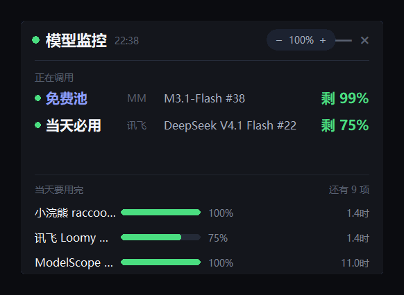
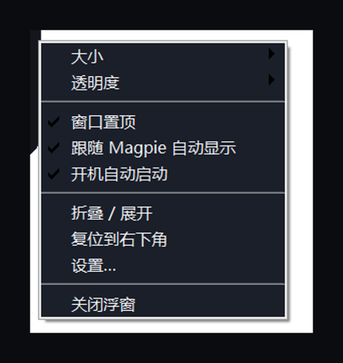

先说个可能有点熟悉的小故事。
我手上有好几个 AI 账号，都用同一个工具（叫 Magpie）管起来，平时用着挺顺。
但有一种情况经常出现：敲一句话，转了两秒，后面弹出一段红字，说请求失败。
不严重，但很打断思路。而且要发现原因，得挨个打开几个平台的后台，一页页翻，才看见——哦，那个"看起来最富"的号，其实前几天就用光了。
问题真的不在模型，在我看不见。谁还剩多少、什么时候重新长回来，这些信息全散落在各家后台，得我自己去拼。
所以我给自己做了个小东西，一直开在桌角：Magpie 额度浮窗。
一句话介绍：一个小面板，一直待在屏幕角落，随时告诉你——刚才那句话是走哪条线出去的、实际用了哪个模型、这个模型大概排第几，还有各家额度还剩多少、多久之后刷新。

截图占位 1：
screenshots/panel.png—— 浮窗本体。上半块"正在调用"，下半块"当天要用完"。
面板分上下两块，都只有几行字。
上半块告诉你"刚才那一下"：走的是免费那一路，模型是 M3.1-Flash，还剩 99%；另一路是 DeepSeek V4.1 Flash，剩 75%。名字后面的 #38、#22 是强弱榜的排名，方便判断这个模型值不值得指望——这个排名文件是可选的，没有就不显示，也不会报错。
下半块是我用得最多的。它按"快过期"排序，最急的放最上面：小浣熊 100%，1.4 小时后刷新；讯飞那边 75%，也是 1.4 小时；ModelScope 100%，还有 11 小时。
这里有个小体会想分享一下。
75% 看着挺宽裕，但如果一个多小时后就要清零，那它其实比 40%、还剩三天的那家"更穷"。所以"还有 1.4 小时"这个数字，比百分比有用得多。
额度不太像存款，更像牛奶——放着会过期。

截图占位 2：
screenshots/menu.png—— 右键菜单，所有开关都在这里，没有独立设置窗口。
想调什么，在面板上点右键就行，不需要另外开设置窗口。里面能调大小、透明度、是否总在最前面、是否跟着 Magpie 一起出现、要不要隐藏某个平台的付费额度、开机是否自动启动、折叠或展开、一键回到右下角。
我自己常动的其实就三个：透明度调到 70% 再勾上"总在最前"，把它贴在编辑器右上角，看得见又不挡代码；折叠起来只留一句结论；还有"跟随 Magpie"——Magpie 一关，它自己就消失了，桌面干干净净。
怎么装：不会写代码也能搞定
需要的东西不多：一台 Windows 10 或 11 的电脑、装好 Python 3.10 以上（去 python.org 下官方安装包就行，默认是完整的）、Magpie 正在运行。
最省事的办法：交给 AI 装。
把仓库地址复制给你常用的 AI 助手（Claude Code、Codex、WorkBuddy 这类能操作你电脑的），再补一句话：
按仓库里的 SKILL.md，帮我装好这个 Magpie 额度浮窗。
仓库里那份 SKILL.md 就是专门写给 AI 看的说明书，检查环境、安装、验证、出问题怎么修，都写好了。你只需要看它最后报一句"装好了"。
想自己动手的：三行命令。
git clone https://github.com/shuai533/magpie-quota-widget.git
cd magpie-quota-widget
powershell -ExecutionPolicy Bypass -File install.ps1
跑完就完事了。它会自动找到 Python、检查必要组件、设置开机自启、在桌面放一个「打开额度浮窗」的图标，然后把面板拉起来。
以后想关掉不想要了，在同一个文件夹里跑 uninstall.ps1，会清理干净。
如果你的 Magpie 不在本机（比如跑在另一台电脑或者容器里），启动前先告诉它地址：set MAGPIE_BASE=http://你的地址:3425。
几个我踩过的小坑，提前说一下
点 × 是真的关掉。 它在后台有个小守卫，挂了会自动拉起来。但你亲手点的 ×，它认，不会再烦你。想再打开，双击桌面那个图标就好。反过来说，别去任务管理器里杀 Python 进程——过十秒它自己又回来了，会以为你没关成功。
可以同时开两个。 如果你本机一个 Magpie、远程一个，设个不同的端口号就能并排放着看。
万一拖到屏幕外面了也别紧张。 它会记住位置，但发现跑到屏幕外就自己回到右下角。真找不着，右键点"回到右下角"。
高分屏不用手动调。 150% 缩放下字也不会糊成一团，它自己会按比例排。
几个可能遇到的问题
装了但看不见面板。 按顺序试：确认 Python 是 3.10 以上；确认 Magpie 在跑；看看是不是已经有一个在运行了（同一个面板不会重复开第二个）。都正常的话，双击桌面的图标。
打开了，但一个额度都没有。 说明它连上了，只是没人告诉它还有多少——可能是某个订阅到期了，也可能那个分组里没有可用的账号。这种情况我一般直接用浏览器打开网关的额度地址看一眼，比猜快。
提示少了 tkinter。 这是 Python 的一个画界面组件。用 python.org 的官方安装包重装一次，选 Modify，把 tcl/tk 那一项勾上就好。有些精简版或者用包管理器装的 Python 会把它省略掉。
端口被占了。 换一个数字就行，设置里改一下端口号再启动。
关于安全，我得说清楚
这类"常驻桌面、还能看到你账号信息"的小工具，谨慎一点是应该的。所以我尽量把它做笨一点。
它只做一件事：读。去网关问一句"现在还剩多少"，把结果画出来。不写配置、不改路由、不碰你的账号。它连你的密钥都不需要知道——百分比是网关算好给它的，它只是搬运。
整个东西就是一个 Python 文件，一千行左右，全部用 Python 自带的库，没有第三方依赖、没有自动更新、没有数据上报、没有"请登录以同步"。你可以花十分钟从头翻一遍再运行——这句话我是认真的，常驻桌面的软件应该经得起这种检查。不放心的话，也可以把代码丢给 AI，让它帮你看一遍有没有往外发数据。
适合谁，不太适合谁
可能适合你：用 Windows，手上有两家以上 AI 订阅，每天都要判断"这个活儿该丢给免费那路还是留着用好的"。
大概不适合：用 Mac 或 Linux 的（理论上也许能跑，但我没适配，不想让你白折腾）；只用一家官方接口、从来不担心额度的；还有桌面必须绝对干净、一个图标都不能多的人——真的，这个就别装了。
最后
仓库在这里：https://github.com/shuai533/magpie-quota-widget
如果它也能帮你省掉几次"怎么又报错了"的困惑，欢迎点个 Star。也可以转给那位经常问你"你那边还有额度吗"的朋友。
有什么想加的，评论区告诉我。比如把剩余额度换算成钱、或者把"还有 1.4 小时"改成"大概还能跑几个任务"——我看看哪个呼声高就先做哪个。
（本文所述为个人使用体验，工具仅供自用参考。）